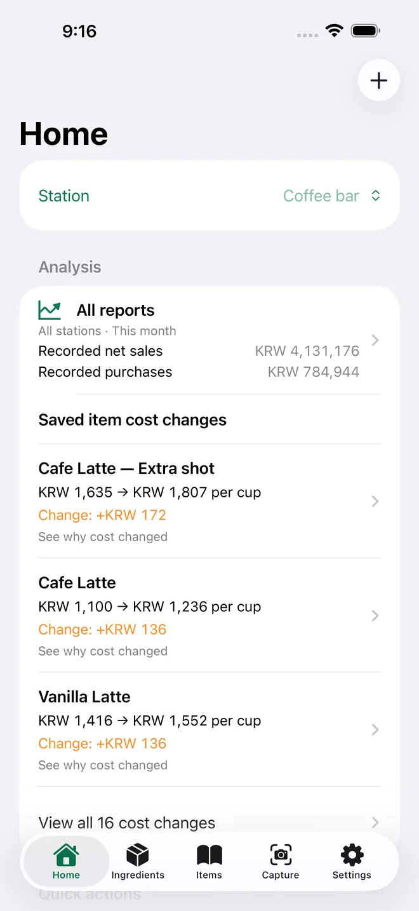

Start with what you buy
A bag of beans, a carton of milk, cups and lids. Record the pack size and purchase price.
For cafés, bakeries, bars, restaurants & food trucks · iPhone
Snap supplier invoices on delivery day, catch dish cost creep before Friday service, sync POS sales mix for theoretical vs. actual variance, and check what is left after delivery commissions.
Free manual costing & CSV import · 8 starter scans + 2/month free on iPhone · Pro annual includes 7-day free trial · English / 한국어 / 繁體中文

A bag of beans, a carton of milk, cups and lids. Record the pack size and purchase price.
Use your recipe amounts to calculate each serving. Include preparations and packaging when needed.
Compare saved costs to see which ingredients changed, then review your selling price.
Costs include the ingredients and packaging you enter. Labor, rent and other overhead are separate. Ingredient cost percentages are not net profit margins.
A modeled latte example
In this modeled example, a latte costs $1.20. Raising only the milk price from $3.00 to $3.60 per liter makes it $1.32. Understand the 12¢ change before deciding what to charge.
Work through a latte example →Illustrative USD purchase prices and recipe; not a currency conversion. Other app examples may use different figures.
$1.20$1.32
+$0.12 from the milk price changeIn the app, open Home → Explore example menus for costed coffee, bar and restaurant examples. Set up my menu is a separate starting point for your own purchase prices.
Short walkthroughs in English · All financial figures are modeled example data.
Loading an example saves a complete local backup before replacing the current kitchen. You can restore your own records from that backup.
Start free on iPhone
Enter unlimited ingredients and recipes, import CSV sheets, check delivery app commissions, record daily sales and waste, and test on-device invoice capture with 8 starter scans plus 2 free scans every month without a subscription.
Upgrade to Pro (monthly or annual with a 7-day free trial on annual) for unlimited invoice, sales report, and recipe scans, Square & Toast POS sync, encrypted shared team kitchens across iPhone and desktop browser, and pack-rounded supplier order lists from your shelf counts. Recognition runs on your device in English, Korean, and Traditional Chinese.
Subscription help →Instant Browser Tools · No Login
Test delivery app commissions, milk and bean price hikes, bar pour cost, baker’s percentages, or food truck event break-even in your browser before installing.
Open the free interactive calculators →See what is left after 15%–30% delivery fees and per-order packaging, and calculate your exact target delivery price.
Simulate a 15% milk or bean price increase per cup, or check cocktail pour cost % from bottle size and price.
Scale dough batches by flour weight or model food truck festival covers, pitch fees, propane, and labor.
Start without an app account on iPhone or in the browser. Local records stay on your device, with complete backup exports and optional passkey-authenticated encrypted shared kitchens in the web portal.
Read the privacy policy →Work through an Americano, a brownie batch, and strawberry milk, then enter the quantities in the app. All figures are illustrative.
Browse the costing articles →